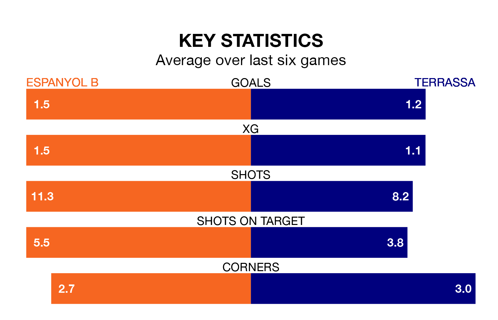

Espanyol B face Terrassa on Sunday seeking to protect their long unbeaten run in Segunda División RFEF Group 3.
Espanyol B are unbeaten in five, with three wins and two draws, ahead of the 5pm kick-off.
They face a Terrassa team who have won two and drawn two over the same number of games.
With 20 goals in 19 games so far this season, Espanyol B are scoring at below the league average rate with 1.1 goals per game. But they are conceding fewer than average too, letting in 21 goals at a rate of 1.1 per game.
Terrassa are also below average scorers, with 1.1 goals per game, compared to a league average of 1.2. They have conceded 1.3 goals per game.
In the last five years, Espanyol B and Terrassa have played each other on five occasions. Espanyol B won one of them, Terrassa two, and they drew twice.
On average, Espanyol B scored 1.8 goals and Terrassa 2.0 in those matches.
Their last meeting was on September 17, when they played out a 1-1 draw.
The away team are 12th in the table after 19 games, of which they have won five and drawn eight, earning 23 points.
The hosts are two places ahead of Terrassa in 10th, with six wins and six draws putting them on 24 points.
Espanyol B's last match was on January 21, a 0-0 draw against La Nucía.
Terrassa beat Lleida Esportiu 1-0 last time out, also on January 21.
Updated: 09:18 (UTC), 23/01/24